The Architecture
This document covers only the upgrade to the previous Choose Your Own Adventure Maker — the AI and social features added in this project — not the original application. It describes the database changes, the asynchronous job queue that powers AI generation, the social layer (ratings, comments, favourites, and views), and the supporting systems — admin settings, content guardrails, soft delete and maintenance, the theme engine, and the image gallery. Each section shows how these new pieces fit together and where they live in the code.
1. Social Features
1.1 Draft / Published Status (Shadow Draft System)
Two columns on the stories table: - status
(ENUM('published','draft','deleted'), default
draft) - published_story_id
(INT DEFAULT NULL) — links a shadow draft back to its
published original
Soft delete uses the
'deleted'status: live/visible queries filterstatus != 'deleted', whiledate_deletedrecords when it was trashed (used for trash ordering + retention purge). See §5.
Core Concept: Published stories are never set back
to draft while being edited. Instead, a hidden shadow
draft (a clone) is created for the author to work on. The published
version stays live and playable. When the author publishes the draft, it
replaces the original’s content while preserving the original
storyID (so ratings, comments, views, and favourites are
kept).
Two scenarios:
| Scenario | Behavior |
|---|---|
| New story (never published) | Created as draft, stays draft until author clicks
“Publish”. Visible only to owner/admins. |
| Editing a published story | Published version stays live. A shadow draft is cloned (with
published_story_id pointing to original). All edits happen
on the draft. “Publish” replaces original content. “Discard” deletes the
draft. |
Rules: - Only published stories appear
in the public gallery and can be rated/commented/favourited - Shadow
drafts (published_story_id IS NOT NULL) are never shown in
the gallery — they are working copies only - Standalone drafts
(published_story_id IS NULL, status = 'draft') are shown to
their owner in the gallery with a “Draft” badge - The author explicitly
publishes via a “Publish” button in the editor - Only one shadow draft
can exist per published story at a time
Edit flow for published stories: 1. Author clicks
“Edit” on a published story 2. System checks: does a shadow draft
already exist? (SELECT ... WHERE published_story_id = ?) -
Yes → redirect to that existing draft -
No → clone the story via
create_edit_draft(), set status = 'draft' and
published_story_id = originalStoryID 3. Author edits the
draft freely — original remains published and playable 4. Author clicks
“Publish” → draft content replaces the original (transaction), draft row
is deleted 5. Or author clicks “Discard Draft” → draft is deleted,
original is untouched
Image handling for shadow drafts:
Shadow drafts share the published story’s image folder to avoid duplicating files on every edit session:
- A draft with
published_story_idset resolves its image path usingimages/stories/{published_story_id}/instead ofimages/stories/{draftStoryID}/ - Helper function
get_story_image_dir($storyID)handles this transparently - When the author changes or adds an image on the draft, a
images/stories/{draftStoryID}/folder is created and the new image is saved there - Unchanged images continue reading from the original folder (zero file copying)
- On publish: new/changed images are moved from
images/stories/{draftStoryID}/→images/stories/{publishedStoryID}/, orphaned images are cleaned up, draft folder is deleted - On discard:
images/stories/{draftStoryID}/is deleted (if it exists), original images untouched
Implementation touch-points: -
get_all_stories() — filter: show published to
all, standalone drafts to owner, hide shadow drafts from gallery -
editor.php — route “Edit” on published stories through
shadow draft creation/lookup - editor.php — Publish /
Discard Draft / Unpublish buttons; banner “Editing a draft — published
version remains live” - index.php — gallery filtering logic
(hide shadow drafts) - get_story_image_dir() — helper for
resolving image paths - publish_draft() — transaction:
replace original content, move images, delete draft -
discard_draft() — delete draft row + image folder
1.2 Ratings (1–5 Stars)
- One rating per user per story (upsert pattern)
- Average displayed on gallery cards and summary page
- Stored in
cyoa_ai_ratingstable
1.3 Favourites
- Toggle bookmark per user per story
- Accessible from gallery and story summary page
- Stored in
cyoa_ai_favoritestable
1.4 Comments
- Threaded comments (one level of nesting via
reply_to_comment_id) - Displayed on story summary page
- Admin can delete any comment; owner can delete comments on their story
- Stored in
cyoa_ai_commentstable
1.5 View Tracking
- Increment on each visit to the story summary page (published stories only)
- One row per view event (allows future analytics)
- Stored in
cyoa_ai_viewstable
1.6 Story Summary Page
(summary.php)
Sits between the gallery and play.php: - Shows story
cover image, title, description, author, theme, genre - Displays stats:
view count, average rating, favourite count, comment count - Play button
+ Edit button (for owner/admin) + Clone button (logged-in users) -
Comments section at the bottom - Visiting this page (for published
stories) triggers a view count increment - Owners and admins can view
their draft stories here as well (no auto-redirect to editor)
2. AI Job Queue Architecture
2.1 Overview
The AI system uses an asynchronous job queue because shared hosting cannot run long-lived processes. The flow is:
- User request → PHP creates a
cyoa_ai_jobsrow (status:pending) and immediately returns — the browser does not wait on the page - Dispatcher (
cron/ai_dispatcher.php) → Invoked by cron (typically once a minute on shared hosting). Each invocation runs several dispatch passes spaced a few seconds apart ($DISPATCH_PASSES×$DISPATCH_INTERVAL), so jobs born mid-minute are still picked up quickly. Each pass times out stale jobs, claims pending jobs (with an image-concurrency cap), and spawns a worker per claimed job, then the invocation exits. - Worker (
cron/ai_worker.php) → Routes the job to the appropriate handler; the handler calls the AI API, applies the result to the database, and marks the jobcompleted - Header polling → JavaScript in
header.phppollsapi_jobs.php?action=unseen_countevery 5 seconds. When completed/failed jobs exist, the badge on the Job Queue link updates - User reviews → User opens
job_queue.phpto see all jobs;seen_atis stamped on load to clear the badge
2.2 Job Types
job_type |
AI Service | Input | Output |
|---|---|---|---|
image |
OpenAI (model configurable, default gpt-image-2) |
Prompt text, image style + optional mood modifier | Image downloaded and saved to
images/stories/{storyID}/; filename + prompt-used stored in
result_json |
scene |
Claude API | Story context, genre, scene direction, tone, type | JSON: {title, description, hint, choices[]} applied
directly to the scene |
story |
Claude API (multi-phase) | Story ID (pre-created draft), premise, genre, tone, target scenes, endings count, audience, image settings, publish flag | Plan phase → scene-write phase → child image jobs
queued for cover + each scene |
Child jobs (image jobs spawned by a story
job) have parent_job_id set to the parent
story job’s ID. Top-level jobs have
parent_job_id IS NULL — this distinction matters for the
per-user pending-job limit (counts top-level only) and for chain-cost
rollup to the parent.
Note on “theme”: a story’s theme is strictly a visual label (a set of colours + fonts; see §6 Theme Engine). It is not sent to text or image generation — neither the story/scene prompts nor the image prompts receive the theme. The semantic hint for generation is the genre.
2.3 Job Statuses
| Status | Meaning |
|---|---|
pending |
Queued, waiting for cron pickup |
running |
Cron worker is actively processing |
completed |
Result applied; result_json populated |
completed_with_errors |
Partially completed (e.g. some scenes written but not all images generated) |
failed |
Error stored in error_message; user can retry |
cancelled |
User cancelled a pending job. Only pending
jobs can be cancelled — once running, the API call is
already in flight and cannot be aborted. |
2.4 Dispatcher / Worker Design (Parallel Processing)
The cron system uses a dispatcher + worker pattern so multiple jobs run in parallel.
Dispatcher (cron/ai_dispatcher.php) —
invoked by cron (commonly once a minute). Two tuning constants at the
top of the file control the within-invocation cadence:
$DISPATCH_PASSES— number of dispatch passes per cron run (default 4)$DISPATCH_INTERVAL— seconds between passes (default 15)
Keep (DISPATCH_PASSES − 1) × DISPATCH_INTERVAL
comfortably under the cron period so a run never bleeds into the next
invocation. Per invocation:
1. Connect to database; bail early if app_setting('ai_enabled') is off
2. Launch maintenance.php once per calendar day (guarded by today's maintenance log)
3. For each pass (1..DISPATCH_PASSES):
a. sleep($DISPATCH_INTERVAL) on passes after the first
b. Timeout stale jobs (running > ai_job_timeout_seconds → mark failed)
c. Compute free image slots = ai_max_concurrent_image_jobs − running image jobs
d. Claim pending NON-image jobs atomically (status pending → running), then claim up to
"free image slots" pending image jobs
e. For each claimed job: spawn `php ai_worker.php <job_id>` as a detached background process
4. Exit (workers keep running independently)Why multiple passes: a job created while an invocation is alive is
claimed by the next pass rather than waiting for the next cron
minute. Workers are launched detached (proc_open on Windows,
exec("cmd &") on Linux), so a pass never waits on
them.
Worker (cron/ai_worker.php) — one
process per job:
1. Receive job_id as CLI argument
2. Fetch job row, verify status = 'running'
3. Route based on job_type:
- image → cron/ai_image_handler.php
- scene → cron/ai_scene_handler.php
- story → cron/ai_story_handler.php
4. Handler calls the AI API, applies result to DB, marks job completed/failedConcurrency: All claimed jobs run simultaneously in
separate PHP processes. Each worker has its own memory space and
execution timeout. The ai_max_concurrent_image_jobs setting
limits simultaneous image jobs to prevent OpenAI rate-limit errors.
Timeout: Controlled by
app_setting('ai_job_timeout_seconds') (default 600 s). The
dispatcher marks running jobs that exceed this threshold as
failed.
Platform support: Dispatcher spawns workers with
exec("cmd &") on Linux and proc_open()
(with NUL stdin + per-job log file) on Windows (XAMPP), so the worker
inherits the full environment. Each worker writes to
cron/logs/job_<id>.log; the dispatcher itself logs to
cron/logs/dispatcher.log.
2.5 Result Application
Results are applied server-side by the handler, before marking the
job completed. No browser interaction is required.
imagejob: Update the target scene’simagefield with the generated filename; store the prompt used inimage_gen.scenejob: Update the target scene with generatedtitle,description, andhint. For each generated choice, create a stub scene (title from choice text, empty description) and a choice row linking the source to the stub.storyjob: Story record already exists asdraftwhen the job runs (created byapi_create_story_ai.phporcli/create_stories.php). Handled incron/ai_story_handler.php, applied bycron/ai_apply.php:- Plan phase: Claude returns the scene structure (titles,
summaries, choice graph) as JSON. The plan always produces a title +
description; whether they overwrite the story is gated by the
gen_title/gen_descriptionflags (when off, the user’s own values, seeded at creation, are kept). - Scene-write phase: For each planned scene, Claude writes
the full content; scene + choice rows are inserted with
temp_id → real sceneIDremapping. - Image phase: If images were included, child
imagejobs are queued for the cover and each scene. - Theme / layout: taken from the user’s choices
(
context_theme/context_theme_json/context_layout) unlessgen_themeis set; theme is visual-only and never drives generation.
- Plan phase: Claude returns the scene structure (titles,
summaries, choice graph) as JSON. The plan always produces a title +
description; whether they overwrite the story is gated by the
- Auto-publish
(
maybe_publish_created_story()): when the create form’spublishflag is set AND images were included, the story auto-publishes only if every job succeeds — the parentstoryjob and all childimagejobs must becompleted. Any failure leaves it adraft. Image-less stories are never auto-published.
AI apply operations always target the story in draft
status, and any AI-applied change sets the story back to
draft. If the apply step itself fails (DB
constraint, etc.), the job is marked failed with the error,
and AI-generated content is preserved in result_json for
manual retry.
2.6 AI API Configuration
All runtime AI settings are stored in the
cyoa_ai_settings database table and accessed via
app_setting('key'). config.php retains only
values needed before DB connect.
config.php retains: - DB credentials
(DB_HOST, DB_USER, DB_PASSWORD,
DB_NAME, DB_PREFIX) - SMTP / email settings -
APP_URL, MAIN_ADMIN, APP_TIMEZONE
- AI_IMAGE_PRICING array — per-image cost lookup for all
four models (not admin-editable) - AI_COST_INPUT_PER_M,
AI_COST_OUTPUT_PER_M — Claude token rates (not
admin-editable)
cyoa_ai_settings table (admin-editable via the
Site / Content / Users settings pages). Defaults live in
SETTING_DEFAULTS in settings.php (the app
works pre-migration off these); the two API keys are intentionally
absent from defaults (null until configured).
| Setting key | Type | Default | Purpose |
|---|---|---|---|
anthropic_api_key |
string (sensitive) | — (null) | Claude API key (site-wide) |
openai_api_key |
string (sensitive) | — (null) | OpenAI API key (site-wide) |
anthropic_model |
select | claude-sonnet-4-6 |
Claude model for all text generation |
openai_image_model |
select | gpt-image-2 |
OpenAI image model |
openai_image_quality |
select | medium |
Default image quality (low/medium/high) |
openai_image_format |
select | jpeg |
Output format / file extension |
scene_thumb_size |
int | 200 |
Scene thumbnail size (px) |
ai_enabled |
bool | 1 |
Global AI processing on/off switch |
ai_job_timeout_seconds |
int | 600 |
Seconds before a stale running job is failed
(watchdog) |
ai_image_request_timeout |
int | 300 |
Per-image OpenAI curl timeout |
ai_claude_request_timeout |
int | 180 |
Per-call Claude curl timeout |
ai_max_pending_per_user |
int | 5 |
Max top-level pending jobs per user |
ai_max_concurrent_image_jobs |
int | 2 |
Max simultaneous image jobs (rate-limit guard) |
app_title |
string | Choose Your Own Adventure! |
Site title in header / page titles |
story_genres |
JSON array | 20 genres incl. Other |
Genre chips + filter options |
image_styles |
JSON object | category → styles map | Grouped image-style dropdown source |
image_moods |
JSON array | 6 moods | Image mood-modifier options |
guardrails_enabled |
bool | 1 |
Append content guardrails to prompts |
guardrails_text |
text | 6 topics | Restricted topics, one per line |
trash_retention |
select | 1week |
Soft-delete purge window
(1day/1week/1month) |
log_retention |
select | 1month |
Log-file purge window |
gallery_page_size |
int | 12 |
Home gallery stories per page |
jobs_history_page_size |
int | 25 |
Job History rows per page |
gallery_tile_size |
int | 220 |
Story image-gallery tile px (presets in
config.php) |
gallery_filmstrip_size |
int | 72 |
Gallery lightbox filmstrip thumb px |
gallery_tile_spacing |
int | 16 |
Gallery tile gap px |
Access pattern: app_setting('key') — returns the DB
value, else the SETTING_DEFAULTS default, else
null. Per-user BYOK keys + quality override live on
cyoa_ai_users (see §2.7).
2.7 Bring Your Own Keys (BYOK)
Users can supply their own API keys so their AI usage is billed to their own account rather than the site owner’s.
Key resolution order (in cron handlers): 1. If the
job’s user has a non-empty claude_api_key or
openai_api_key stored in the cyoa_ai_users
table, use that key for the matching API call. 2. Otherwise fall back to
app_setting('anthropic_api_key') /
app_setting('openai_api_key').
Per-user settings stored on
cyoa_ai_users: -
claude_api_key VARCHAR(255) — personal Claude API key
(optional) - openai_api_key VARCHAR(255) — personal OpenAI
API key (optional) - openai_image_quality VARCHAR(10) —
personal image quality override (optional)
Account page (account.php): “API Keys”
section lets users view/update/clear their stored keys and quality
override.
2.8 Prompt Templates
All AI system prompt text lives in standalone .txt files
under prompts/. Prompts that contain dynamic values use
{PLACEHOLDER} tokens substituted in PHP via
str_replace().
prompts/
image_system.txt — System context for OpenAI scene image generation
cover_image_system.txt — System context for the story cover image
scene_system.txt — System prompt for single scene generation (Claude)
story_plan_system.txt — System prompt for story planning phase (Claude)
story_scene_writer_system.txt — System prompt for scene writing phase (Claude)Helper function
load_prompt(string $name, array $vars = []): string reads
the file and performs placeholder substitution. See
ai-prompts.md (same folder) for the full
prompt-construction logic.
2.9 Prompt Assembly
When the AI writes a full story, the prompt is not a
single block of text — it is assembled from several sources and sent in
stages. The diagram below traces that pipeline: the user’s choices and
seed data are resolved and merged into the prompt templates, then the
request fans out into a plan call, one
scene call per scene, and one image
call per image. See ai-prompts.md (same folder) for the
exact construction logic.

2.10 Job Cost Tracking
The cyoa_ai_jobs table has cost columns:
| Column | Type | Purpose |
|---|---|---|
input_tokens |
INT | Claude input tokens consumed |
output_tokens |
INT | Claude output tokens consumed |
image_count |
INT | Number of images generated |
cost_usd |
DECIMAL(10,6) | Calculated cost for this job |
Cost reference rates live in config.php
(not the DB), so they can be tuned in one place:
- Text (Claude) — per-1M-token rates
AI_COST_INPUT_PER_M($3.00) andAI_COST_OUTPUT_PER_M($15.00). A job’s text cost isinput_tokens ÷ 1M × \$3.00 + output_tokens ÷ 1M × \$15.00. - Images (OpenAI) —
AI_IMAGE_PRICINGmaps model → quality → per-image price (at 1024×1024). The image handler looks up the row for the active image model and the job’s quality, then multiplies byimage_count:
| Model | Low | Medium | High |
|---|---|---|---|
gpt-image-1-mini |
$0.005 | $0.011 | $0.036 |
gpt-image-1 |
$0.011 | $0.042 | $0.167 |
gpt-image-1.5 |
$0.009 | $0.034 | $0.133 |
gpt-image-2 |
$0.006 | $0.053 | $0.211 |
For story parent jobs, the displayed cost is the
chain cost — the sum of cost_usd across
the parent job and all child jobs with the same
parent_job_id. Child jobs show no cost label. A
… suffix indicates the chain is still running.
Functions: db_update_job_cost(),
db_get_chain_cost().
2.11 File Structure for AI Features
cron/
ai_dispatcher.php — Cron entry point; multi-pass claim, spawns workers, daily maintenance
ai_worker.php — Single-job router; receives job_id via CLI arg
ai_story_handler.php — Multi-phase Claude handler for `story` jobs (+ premise-seed resolution)
ai_scene_handler.php — Claude handler for single `scene` jobs
ai_image_handler.php — OpenAI image handler for `image` jobs
ai_apply.php — Apply completed results to the DB; auto-publish gate
ai_helpers.php — Shared cron helpers (HTTP, logging, prompt loading)
maintenance.php — Daily cleanup: purge expired trash + old logs
logs/ — Per-job + dispatcher + maintenance + guardrail logs
cli/
create_stories.php — Batch story-creation jobs (--file or generated)
export_story.php — Bundle a story (rows + scenes + choices + images) for transfer
import_story.php — Re-create an exported bundle on this instance with fresh IDs
validate_play_fonts.php— Verify every play-font family/weight resolves on Google Fonts
sample_stories.json — Example batch input for create_stories.php --file
data/ — Data-driven content (loaded via data.php):
premises.json — Story premise seeds (genre-tagged) for blank-premise creation
audiences.json — Audience keys + writing guidance
themes.json — Theme presets (colours + fonts)
play_fonts.json — Curated, mood-tagged Google-Fonts allow-list
prompts/
image_system.txt cover_image_system.txt
scene_system.txt story_plan_system.txt story_scene_writer_system.txt2.12 Security Considerations
- API keys stored in DB
cyoa_ai_settings(server-side only, never exposed to browser); masked in admin panel display - Cron worker validates that the
ai_jobsrow belongs to a valid user/story before processing - Rate limiting:
ai_max_pending_per_usersetting limits concurrent pending jobs per user - Input sanitization: AI prompts are length-limited and stripped of HTML before sending to API
- Generated text is sanitized with
htmlspecialchars()before storage - Generated images are validated (file type, size) before saving
3. Job Queue Page
(job_queue.php)
A dedicated page accessible from the header navigation for all logged-in users. Results are already applied by the time the user visits — this page is for visibility and navigation only.
User view
- Table of the logged-in user’s jobs, newest first
- Columns: type, story title, scene title (if applicable), status, cost, submitted time, completed/failed time
- “Go to scene/story” link on every row — takes the user to the editor at the relevant point
- Retry button on failed rows — resets to
pendingfor cron pickup - Cancel button on pending rows
Admin view
When an admin visits job_queue.php, they see all users’
jobs with an additional Username column. All actions
(retry, cancel) are available across all users.
“Seen” tracking and badge dismissal
When the page loads, all the current user’s completed
and failed jobs with seen_at IS NULL are
marked seen_at = NOW() in a single UPDATE. This clears the
badge.
4. Header Notification Badge
All notification and polling logic lives in header.php.
No page-specific JS is needed.
Badge behaviour
- The Job Queue icon in the nav shows a badge with a count of unseen completed/failed jobs
- Badge disappears when the user opens
job_queue.php - Badge reappears if new jobs complete while the user is on another page
Polling
header.php includes a JS block that polls
api_jobs.php?action=unseen_count every 5 seconds:
(function () {
const badge = document.getElementById('job-queue-badge');
if (!badge) return; // not logged in
function checkJobs() {
fetch('api_jobs.php?action=unseen_count')
.then(r => r.json())
.then(data => {
if (data.count > 0) {
badge.textContent = data.count;
badge.hidden = false;
} else {
badge.hidden = true;
}
})
.catch(() => {});
}
checkJobs();
setInterval(checkJobs, 5000);
})();5. Soft Delete, Trash & Maintenance
Stories are soft-deleted, not removed immediately:
db_soft_delete_story()setsstatus = 'deleted'and stampsdate_deleted = NOW(). Live queries (gallery / editor / summary / favorites) filterstatus != 'deleted';date_deletedrecords when it was trashed (for ordering + retention). Restore setsstatus = 'draft',date_deleted = NULL.trash.phplists the owner’s (or, for admins, all)status = 'deleted'stories with Restore and Delete permanently actions. An inline “Empty Trash” button purges the current user’s trash now.cron/maintenance.phpruns once per calendar day (launched by the dispatcher, guarded by that day’s maintenance log; it also has its own <1h age guard against double-fires). It purges:status = 'deleted'stories whosedate_deletedis older thantrash_retention(1day/1week/1month), and- log files in
cron/logs/older thanlog_retention.
6. Theme Engine
(visual layer) — theme.php, fonts.php
A story’s theme is purely visual: a body font +
heading font (from the curated allow-list) and bg/text/accent colours,
stored as JSON in stories.theme_json. The legacy
stories.theme column holds a preset slug and
serves as the per-field fallback. Theme is never sent to AI
generation.
- Presets live in
data/themes.json; the font allow-list indata/play_fonts.json(read viafonts.php). Both are data-driven so new presets/fonts appear automatically. (Acyoa_ai_themestable exists in the schema but is currently unused — the engine reads the JSON directly; the table is leftover scaffolding.) theme_sanitize()is the single injection gate: colours must match a strict#RRGGBBregex, fonts must be on the allow-list, sizes are clamped, and a text-vs-bg contrast below WCAG AA falls back to the preset.theme.phponly ever emits validated values.play.phpinjects the resolved values as an inline:root { --bg; --text; --accent; --font; --font-heading; --base-size }block;styles/play_theme.cssderives every bespoke shade viacolor-mix(). Google-Fonts<link>tags are built from the chosen families.- Editor UI: a theme editor (preset dropdown +
heading/body font dropdowns + colour pickers + live preview) saved to
theme_json. The AI may suggest a palette, but the user’s pick wins unlessgen_themeis set.
7. Story Image Gallery —
gallery.php
Per-story image gallery (cover first, then every scene that has an image; image-less scenes skipped).
- Data seam —
get_gallery_items(int $storyID): array(db_functions.php) returns ordered{type, id, title, src}items, resolving shadow-draft image folders like summary/editor do. This single function is the extension point for an eventual (deferred) global gallery. gallery.phprenders the tile grid server-side and embeds the items as JSON forgallery.js(lightbox: prev/next wrap-around, keyboard nav, filmstrip).styles/gallery.csssizes tiles from thegallery_*settings. The same lightbox is reused ineditor.phpto enlarge thumbnails.- Access is owner/admin only, entered from the editor’s Scenes header and the summary page.
8. Data-Driven
Content Layer — data.php + data/*.json
data.php provides load_data_json('name')
(cached read of data/name.json). Content that used to be
hardcoded now lives in JSON so it can grow without code edits:
premises.json— genre-tagged premise seeds. On a blank premise,ai_pick_seed()draws one (filtered by genre, or the whole list when genre is “Any”); batch/CLI runs pick without replacement to avoid near-duplicate stories.audiences.json— audience keys + writing guidance injected into prompts.themes.json/play_fonts.json— theme engine inputs (see §6).
“Any” defaults: the create form’s Genre / Tone / Audience default to
Any; ai_resolve_story_params() expands
these to concrete random values in code before the job
is queued, so the AI always receives a concrete value while the UI stays
unconstrained. A blank image style resolves to one
random style for the whole story (ai_random_image_style())
so every image shares a look.
9.
Cross-Instance Story Transfer — cli/export_story.php /
cli/import_story.php
Moves a story between app instances (e.g. local ↔︎ host), which differ in IDs and image folders.
- Export writes a bundle directory:
story.json(story + scenes withtemp_id= original sceneID + choices referencing temp_ids) plus a copy of the image files. - Import recreates the story with fresh
IDs using the same two-pass remap as
clone_story()(create all scenes → write choices with remapped destinations), copies images into the newimages/stories/<newID>/, assigns an owner (--owner/--owner-email/ defaultMAIN_ADMIN), and imports as a draft. Missing images clear their reference; unresolvable choice destinations fall back to “ending”.